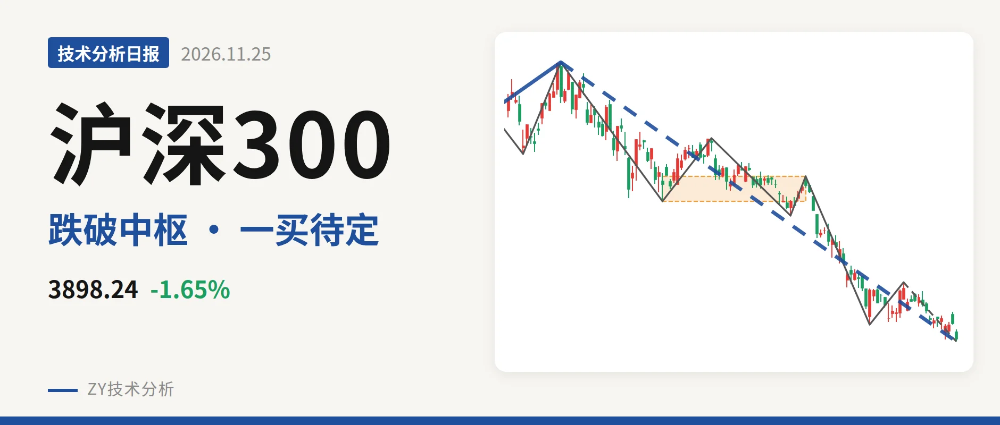
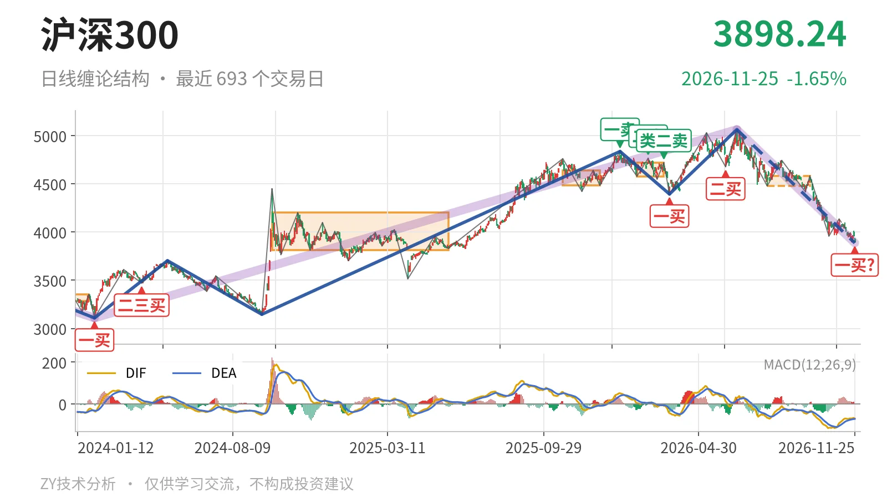

沪深300｜跌破前中枢下沿，暂定一买现盘背

最近日线中枢 4478.21—4583.38点，收盘位于中枢之下
一句话：日线下跌段延续，暂定一买现盘整背驰，反抽无力将成三卖。
📉 走势结构：日线下跌段还在延续
沪深300自6月23日5064.27点开启的日线下跌段还在延续，当前已跌去23.2%。从更大级别走势看，2024年2月2日至2026年6月23日的上涨走势尚未走完，但这段调整已经回吐了前期涨幅的相当部分。日线线段层面，6月23日以来的下跌线段内部已走出7笔，下跌结构趋于饱满。只要这笔下跌没有结束，整体下行惯性就依然存在。

📊 中枢与位置：中枢下移，深跌至下方
最新收于3898.24点，位于7月30日至9月22日日线笔中枢（4478.21—4583.38点）下方。当前价格跌穿该中枢下沿4478.21点约13%。此前3月24日至6月23日的上涨线段曾推动中枢上移，但当前价格已经完全跌破前期中枢区间。中枢下移伴随价格大幅脱离下沿，说明空头打压较为坚决，多头防线被击穿后尚未组织起有效反击。
🔄 买卖点：卖点逐级走低，暂定一买浮现
前期高点依次形成1月13日一卖4836.95点、2月25日二卖4766.56点、3月17日类二卖4720.86点，卖点一个比一个低。经过连续回落，当前11月5日以来的下跌笔没有结束，在3886.92点形成暂定的一买（盘整背驰）。由于该笔仍在延续，这个买点会随新低而变化。如果后续笔被破坏，该买点的级别和性质才有望确认。

⚖️ 背驰：新低不新弱，盘整背驰显现
比较9月22日至10月23日的下跌笔与11月5日以来的下跌笔。前者绿柱面积494，DIF低点-115.1；当前笔绿柱面积0，DIF低点-92.5。价格创出3886.92点新低，但DIF未创新低，绿柱面积大幅收缩。这构成典型的新低不新弱，盘整背驰特征明显。不过，由于当前下跌笔还在延续，背驰能否转化为反转，仍需等待底分型确立。
🔍 关键位置：反抽力度决定结构强弱
3886点一线是当前下跌笔的低点。若后续反抽回不到4478点上方（前中枢下沿），结构上构成三卖，后续将面临更大级别回调压力。若重新站上4478点，下跌更可能只是中枢扩展。当前价格深陷中枢下方，且日线下跌段未完，多头若要扭转颓势，必须先收回中枢下沿，否则任何反抽都只能视为中枢下方的震荡。
⚠️ 本文为基于公开行情数据的缠论技术结构记录，由程序自动计算并生成，仅供学习交流，不构成任何投资建议。市场有风险，投资需谨慎。